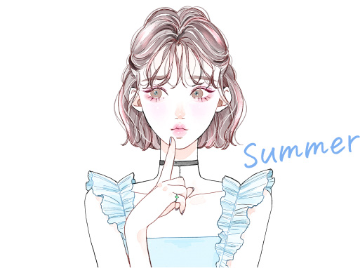
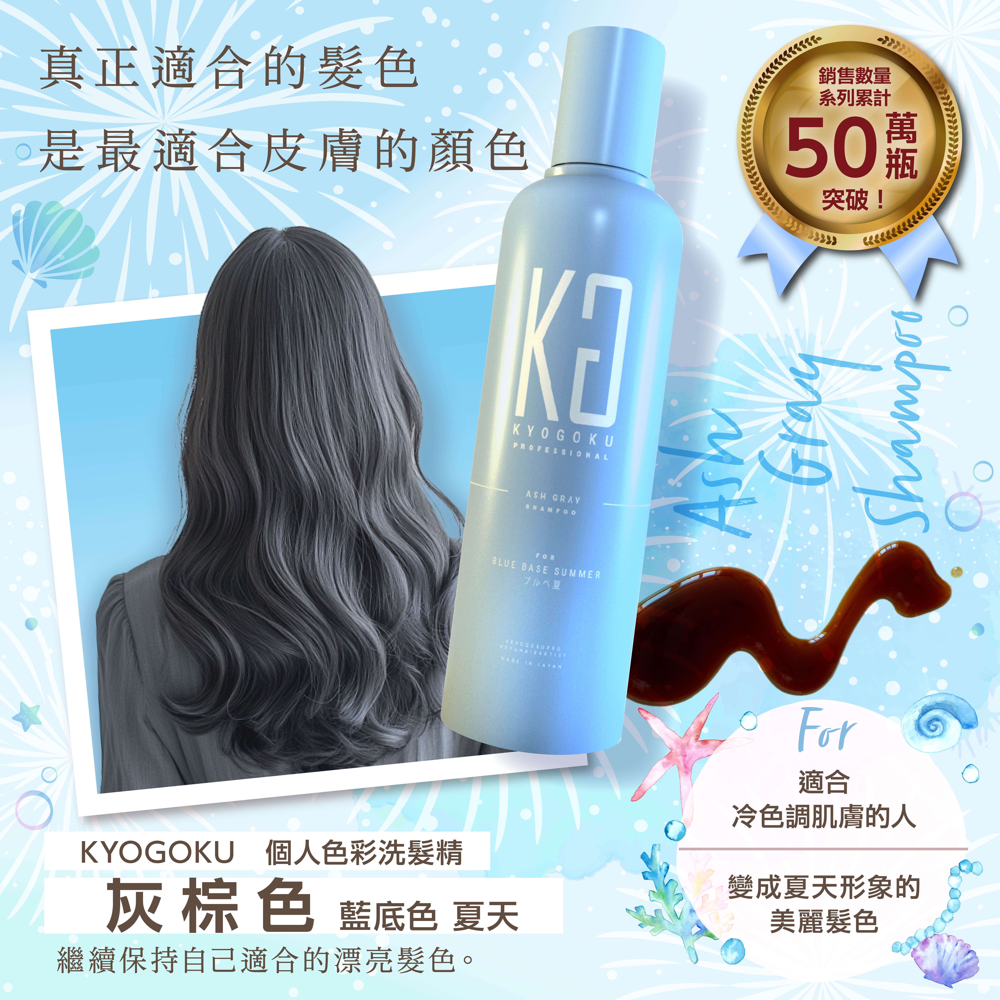

如同梅雨到初夏般的柔和氛圍，溫柔、女性化的色彩最適合夏季型的你。
巧克力棕、粉米色、薰衣草棕等帶有透明感的髮色，能打造出迷濛又知性的氛圍系形象！
夏季型（夏）屬於藍調基底（冷色調），
適合溫柔的粉彩色系（中明度・中彩度）、
以及柔和的中間色（中明度・低～中彩度）。
推薦色系包括：
水藍色、薰衣草紫、明亮海軍藍、奶油白、嬰兒粉紅等，
這些色彩能帶來清爽、涼感的氛圍，最適合妳！

專為「藍色底 × 夏季型膚色」設計的個人彩色洗髮精，
維持低飽和、透明感的灰棕霧感髮色，
展現出如夏日清風般的知性氣質與柔和魅力。